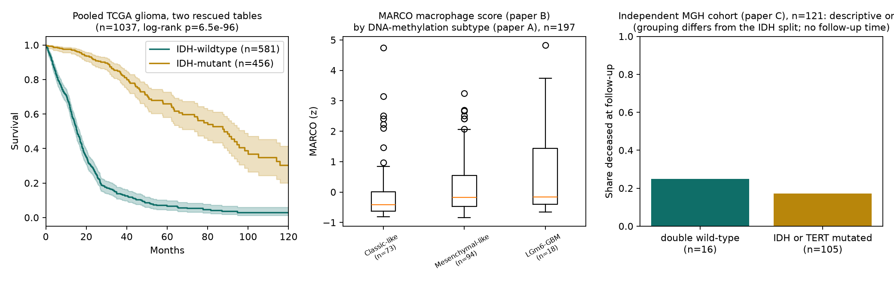

Before 2023, the normal way to share a cancer dataset was to attach a spreadsheet to the paper. Those files still exist, but no catalogue lists them. We counted every one across 26,228 NCI-funded open-access papers, opened the attachments of 1,200 papers across four cancers (1,076 analysed), and packaged the first rescues.
26,228
NCI-funded open-access papers, 2016–2022, with supplementary files and no text-mined data-repository accession
4,759
of them carry at least one spreadsheet or CSV attachment (18.9%)
15,458
spreadsheet and CSV files, 15.9 GB of Excel, listed in no dataset catalogue
80%
of those papers are CC BY or CC0, so the files can be re-deposited unchanged
18.8%
of papers hold a genuine data table (14.5% as a native spreadsheet), confirmed by opening the files in four random samples of 300 papers
How we counted
Two independent methods, and they agree.
01Census. Europe PMC's search finds every NCI-funded open-access paper from 2016 to 2022 that has supplementary files and no text-mined accession for GEO, SRA, dbGaP, EGA, ArrayExpress, PRIDE, BioProject, MetaboLights, PDB or GenBank. We read each paper's full text and listed its attachments by filename, size and caption. 73,795 attachments in 25,138 readable papers. Nothing downloaded.
02Sample. Four random samples of 300 papers each (glioblastoma, breast, colorectal, leukemia) from that population. Every attachment downloaded, every spreadsheet, CSV, Word and PDF file opened. A file counts as a dataset if its largest table has at least 50 rows and 3 columns, or at least 1,000 rows. Peer-review letters, reporting summaries and figures are excluded automatically.
03Re-examination. 90 of the classifier's decisions were re-examined file by file (with the AI assistant, not blind; verdicts published). All 60 files it called datasets were real data tables; every table it missed was under 50 rows. A blind human check is the next step.
04Package and list. Eight datasets from CC BY papers were packaged unmodified with DataCite-style metadata, ready for deposit in an NIH-recognized repository (nothing uploaded yet). All 462 rescued datasets were written into a source file in the exact 27-column schema the Index of NCI Studies pipeline already loads for its curated sources.
Cancer (random sample of 300, GEO papers excluded)
Analysed
Papers with a dataset
Share
CC BY / CC0
Glioblastoma
271
53
19.6%
41
Breast cancer
271
51
18.8%
46
Colorectal cancer
273
53
19.4%
47
Leukemia
261
45
17.2%
33
Pooled
1,076
202 / 1,076
18.8%
167
Papers with at least one spreadsheet attachment, by publication year. The share is 14–22% every year.
Datasets found so far
Try the working tool: search all 15,458 buried spreadsheets, filter by year, journal or license, paste a PMC ID to see what is buried in one paper, and open any file directly from PubMed Central.
The 462 dataset files found across the four 300-paper samples, each with an automatically generated description (201 papers), after excluding papers that carry a GEO accession. Descriptions are generated from the file itself and are meant to be readable by someone who is not a data scientist. Sizes are the largest table in the file.
Dataset and source paper
What it looks like
Rows
Cols
License
Nothing matches. Clear a filter or try a different word.
Rescued tables put back to work
Three glioma tables rescued from the glioblastoma sample, none listed in any catalogue, joined into analyses none of the source papers did. Left: two TCGA-derived tables from different papers, pooled to 1,037 patients, reproduce the known IDH survival split, which validates the data. Middle: a cross-table comparison that exists only because two buried files were put side by side. Right: a 121-patient hospital cohort, shown descriptively; its grouping (IDH or TERT mutated vs neither) is not the same as the IDH split and the numbers are small. This file does have a publisher-minted Figshare DOI, but that record names no NCI grant and NCI's index does not list it. Code and outputs are in the repository under demo/.

Verified patient-level tables across the four samples describe about 4,400 patient records, roughly 500 of them from institutional cohorts not in TCGA, GEO or dbGaP. Two of the three tables above are curated slices of public TCGA data, so the survival result is a reproduction of known biology, not new evidence.
Where the buried data is: by journal
The census by journal, NCI-funded open-access papers 2016–2022 with supplementary files and no repository accession. Journals whose authors most often attach data are the ones with the most to rescue. Top 15 by spreadsheet files; the full table of 103 journals is in the repository.
Journal
Papers
With a spreadsheet
Share
Spreadsheet files
Nat Commun
1,494
889
59.5%
3,201
Elife
343
226
65.9%
1,440
PLoS One
1,383
412
29.8%
1,052
Sci Rep
1,897
271
14.3%
682
PLoS Genet
193
99
51.3%
472
Oncotarget
1,196
148
12.4%
416
Nature
94
52
55.3%
331
Genome Biol
108
71
65.7%
327
Commun Biol
139
106
76.3%
309
Proc Natl Acad Sci U S A
345
79
22.9%
298
PLoS Comput Biol
172
65
37.8%
257
iScience
157
42
26.8%
178
PLoS Biol
47
41
87.2%
160
Mol Cell Proteomics
40
30
75.0%
158
Life Sci Alliance
48
27
56.2%
145
Not a cancer quirk: five other NIH institutes
The same filename census on random 300-paper samples from other institutes, 2016–2022, open access, supplementary files present, no repository accession. NCI by the same yardstick: 17.9%.
Institute
Population
Papers with a spreadsheet
Share
NHLBI (heart, lung, blood)
16,339
44 / 295
14.9%
NIDDK (diabetes, digestive, kidney)
12,954
52 / 295
17.6%
NIMH (mental health)
9,925
53 / 284
18.7%
NIA (aging)
12,459
60 / 292
20.5%
NINDS (neurological)
11,366
67 / 281
23.8%
What this does not claim
The census counts files by name. The "genuine dataset" rates come from opening files in four cancer types; other fields may differ. An independent methods review on 2026-09-23 found our repository filter had missed GEO; the population and every rate above were corrected downward and the correction is documented in the repository.
About half of the rescued tables are analysis results (gene lists, pathway scores) rather than raw measurements. Both are reusable; each record says which it is.
About a fifth of the files already have identifiers through publishers: BMC and SpringerOpen deposit each additional file to Figshare with a DOI, and PLOS deposits supporting information per article; those reach the NLM Dataset Catalog and Google Dataset Search, typed by file extension and credited per the publisher's funding text. The other three-quarters (Nature Portfolio at 40% of files, eLife, Elsevier, Oncotarget) have no identifier or description anywhere. None of these, including the Figshare records, appears in NCI's index. EMBL-EBI BioStudies lists files by name and size only. About 15% of population papers reference a repository somewhere our accession filter missed.
About 4% of papers could not be read due to server errors and are excluded. Zip archives were not opened.
Large-scale processing of supplementary files was done before us: NLM's FAIR-SMART (Wei, Lu et al., PLOS Biology 2025) aggregates and standardizes PMC supplementary files behind an API, and Gobeill et al. (2025) indexed 36 million of them for text search. Those are retrieval systems. The new step is deciding which files are datasets, describing them, giving them identifiers, and listing them in the funder's own catalogue; FAIR-SMART is a natural upstream, not a substitute.